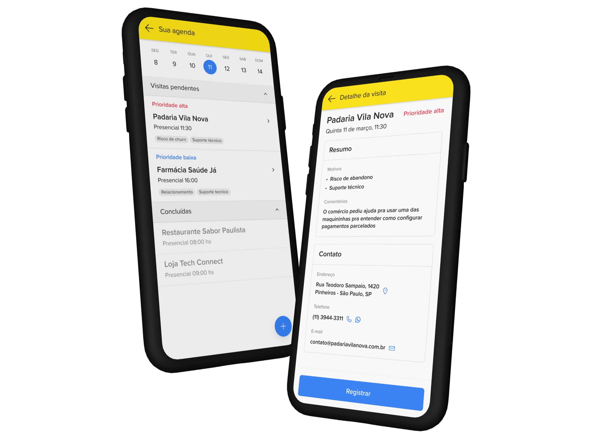
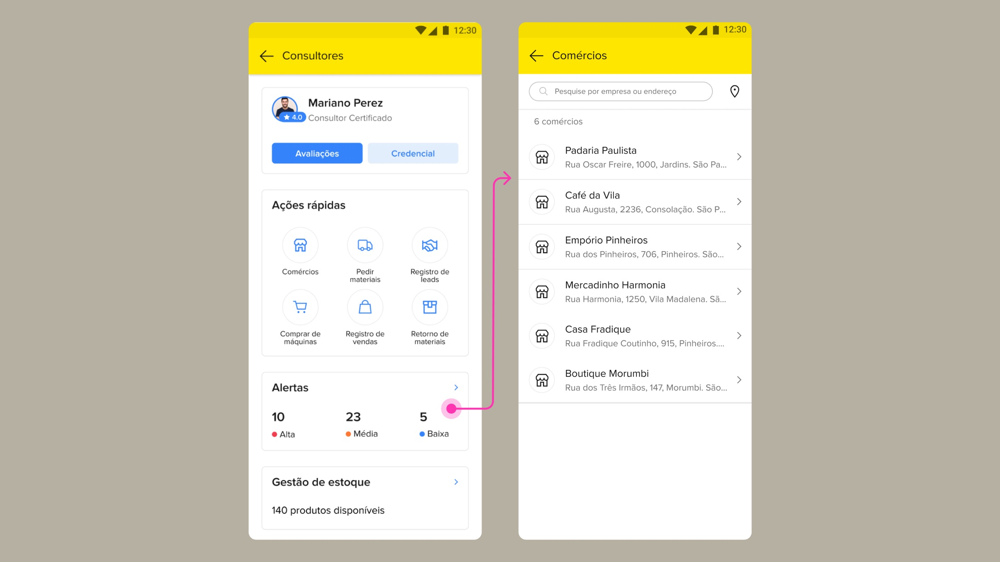
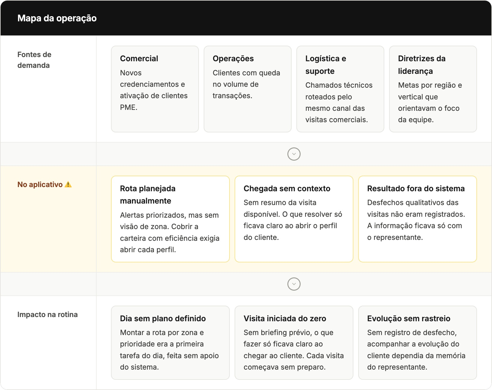
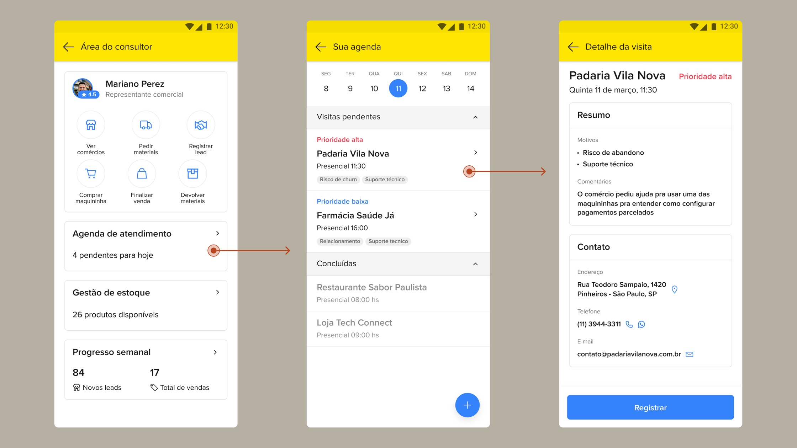

Mercado Pago · 2024–2025
Sales visit prioritization
Field representatives received priority alerts, but the tool didn't help turn them into a viable visit plan. The challenge was redesigning this flow for Brazil, Mexico, and Argentina without creating inconsistent product behavior across markets.

A tool at the center of field operations
The product
I worked in the acquiring vertical of Mercado Pago, on an internal CRM used by field sales teams to manage SME portfolios.
The context
The product spans the full sales cycle, from prospecting to account retention, in a context with many clients per region and strong execution pressure in the field.
My focus
My focus was improving the visit prioritization experience — a key part of representatives' daily planning.
Redesigning the CRM priority experience
The application already displayed portfolio alerts, but required navigating between different screens to link each alert to its merchant and understand which visits were most urgent that day.

From research to product opportunity
I synthesized the key discovery insights into a unified operations overview, connecting analysis of the existing product, input from cross-functional partners, and recurring conversations with field reps. This synthesis guided the project's priority definition and the improvement of the visit management experience.
To structure this process, I used NotebookLM to organize the discovery sources, helping frame the problem more clearly, map out possible constraints, and check alignment with the PRD before moving on to solution directions.

Three low-fidelity proposals
To explore the three directions quickly, I combined a Crazy 8s exercise with stakeholders and Figma Make, turning ideas into real prototypes in a short time without compromising the project timeline.
Visit map
- ✓ Visualizes the portfolio geographically
- ✓ Spatial planning
- ✕ High technical complexity
Prioritized schedule
- ✓ Organizes the workday
- ✓ Leverages existing data
- ✓ Lower engineering effort
Prioritized portfolio
- ✓ Low cost
- ✕ Little improvement in visit organization
The chosen direction balanced impact for field reps and technical feasibility within the project timeline.
The new experience focused on clarity
The new interface organized the representative's day through date-based navigation, bringing priority levels and visit reasons directly to the main schedule screen. This design eliminated the need to guess the next step or search through individual profiles, allowing the professional to understand the context and urgency of each merchant before even touching the screen.

Refining the experience for launch
I validated the prototype with five field representatives to confirm whether the new schedule structure was understood during visit planning. Tests showed that date navigation was intuitive, but there was still a need to open each client's profile to understand why the visit had been flagged as a priority.
Before implementation, I incorporated this information directly into the listing through tags, reducing a navigation step and making the schedule more scannable for daily planning.
I used NotebookLM to identify the terms that came up most often in the interviews, words that seemed to reflect the reps' mental model, and ChatGPT and Claude to turn those terms into more accessible tag wording, matching the language they already used day to day.
More daily productivity and less portfolio churn
After launch, representatives' daily productivity rose 15% and portfolio churn dropped 5%. With each priority's reason visible on the agenda through the tags, representatives spent less time opening profile after profile and more time in the field, which is reflected in those two numbers. The prioritized schedule kept a single product behavior for Brazil, Mexico, and Argentina, using targeted content and language adaptations instead of parallel flows per market, and was extended into a desktop version for managers overseeing full representative teams.